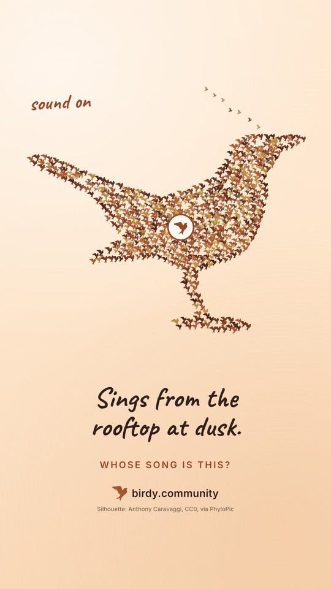

Förslag · 8 oktober 2026
Flocken blir fågeln
Du valde C med en tvist: i varje omslag bildar flocken fågeln i just den videon. 839 små fåglar, en för varje art i Birdy, formar trana, gräsand, ormvråk eller rödhake, och artens egen fågel lyser. Formen är första ledtråden, den handskrivna raden den andra och låten i videon svaret. Så här ser Instagram-profilen ut efter de nio första inläggen (omkring 17 oktober): de tre fästa rutorna överst, sedan nyast först.
Med din tvist
NyttSamma papper, flock och ledtråd som C, men formen byts för varje inlägg, så ingen ruta i rutnätet är den andra lik.

Som förut
Birdys fågel i varje ruta. Bara texten skiljer, därför tvisten.

Som i dag
Samma mörka ruta med frågetecken i alla inlägg.

Formerna. Silhuetterna kommer från PhyloPic, ett fritt arkiv med silhuetter som tecknare själva lagt ut (CC0 eller CC BY), aldrig AI-ritade fåglar. Tecknaren står längst ned i omslaget. Talgoxen har ingen egen silhuett där och lånar mesarnas form; så gör alla arter som saknar en egen.
Ledtrådarna är exempel. De skarpa tas ur artsidornas kontrollerade fakta, en kort mening per art.
Var de hamnar. De omkring 50 inlägg som inte är schemalagda än får de nya omslagen direkt: YouTube och TikTok från 19 oktober, Facebook och Instagram från 29 oktober. För de 40 schemalagda kollar jag om omslaget går att byta utan att schemalägga om.
Ser det rätt ut?
Säg till om något ska ändras, till exempel större ledtråd, ingen tänd fågel eller inga fåglar som lämnar flocken. Annars gör jag omslagen till alla inlägg som är kvar.